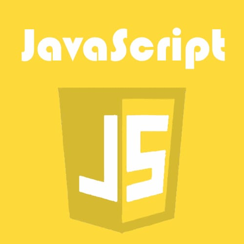

JavaScript is a text-based programming language that is used on both the client-side and the server-side, enabling you to create interactive web pages. Where HTML and CSS are languages that offer web pages structure and design, JavaScript provides interactive elements for the web pages that engage a user.
JavaScript allows users to interact with web pages. There's almost no limit to the things you can do with JavaScript on a web page – these are just a few examples: Display or conceal more details by clicking a button Switch the color of a button while the mouse hovers over it Slide through a carousel of images on the Zooming in or zooming out on an image
Developers can use different JavaScript frameworks to develop and build web and mobile apps. JavaScript frameworks are collections of JavaScript code libraries which provide developers with pre-written code to use for routine programming features and tasks — literally a framework for building websites or web applications around them.
Of course, you can also use JavaScript to create browser games. These are a great way for beginning developers to practice their JavaScript skills.
Aside from the infinite possibilities, web developers have other reasons to use JavaScript over other programming languages:
The Java language is a multi platform language that’s particularly helpful in networking. Of course, mostly this language is used on the web with Java applets. However, this language is used to design cross platform programs, Since it similar to C++ in structure and syntax. For C++ programmers, Java language is very easy to learn and it offers some advantages provided by object oriented programming. Like reusability and it can be difficult to write efficient code in Java. But, nowadays the speed of the Java language has increased and 1.5 version offers some good features for easy program making.